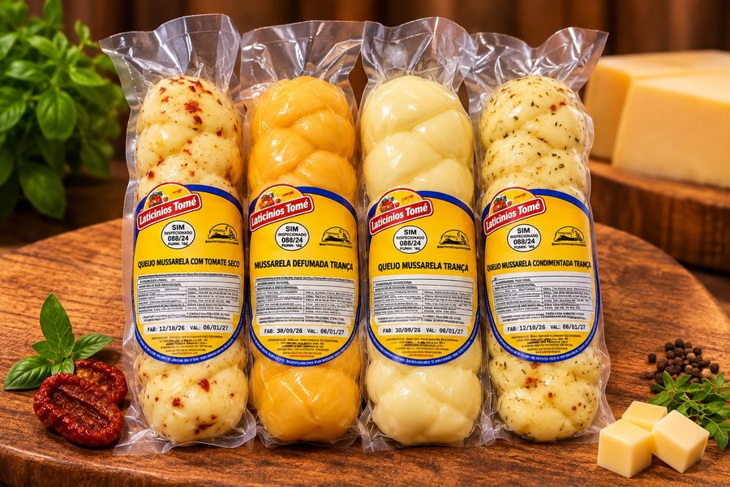
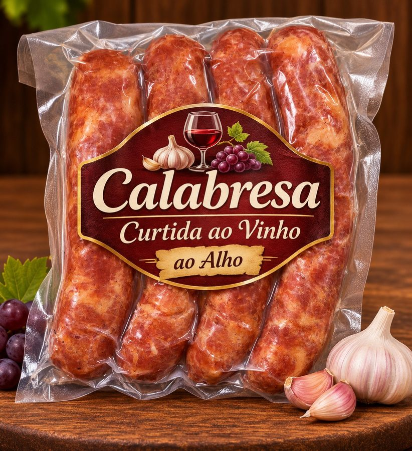
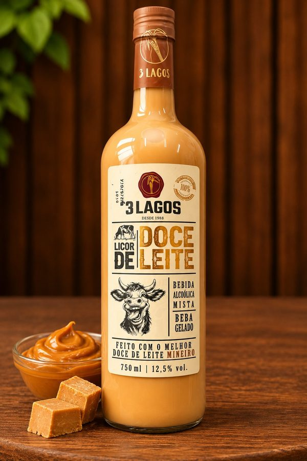

Queijo Minas Padrão
Massa macia e sabor suave, do jeito mineiro. Vai bem no café da manhã, no lanche e derretido na chapa. Laticínios Tomé, Serra da Canastra (MG).
R$ 59,00 / peça
Quero esteDesde 1999 • Sabores de Minas
Queijos, frios, doces e sabores especiais para quem valoriza qualidade e parceria.
Massa macia e sabor suave, do jeito mineiro. Vai bem no café da manhã, no lanche e derretido na chapa. Laticínios Tomé, Serra da Canastra (MG).
R$ 59,00 / peça
Quero este
Mussarela trançada, macia e saborosa, em 4 sabores: Tradicional, Defumada, com Tomate Seco e Temperada. Ótima para lanches, petiscos e tábuas. Diga o sabor na observação do pedido. Laticínios Tomé, Serra da Canastra (MG).
R$ 49,00 / peça
Quero este
Quatro queijos numa peça só: Parmesão Tradicional, Parmesão Capa Preta Uruguaio, Queijo do Reino e Parmesão Condimentado. Perfeito para tábuas, presentes e para quem quer provar de tudo. Marca MLG, produzido na Serra da Canastra (MG).
R$ 69,00 / peça
Quero este
Calabresa curtida no vinho, temperada com alho. Sabor marcante para churrasco, petiscos, pizza e acebolada.
R$ 39,00 / pacote
Quero este
Cremoso, feito com o melhor doce de leite mineiro. Sirva bem gelado: ótimo puro, com gelo ou em sobremesas. Venda proibida para menores de 18 anos.
R$ 59,00 / garrafa
Quero este
O legítimo pão de queijo mineiro, crocante por fora e macio por dentro. É só tirar do freezer e assar. Congelado, pronto para assar. Fornalha Mineira.
R$ 39,00 / pacote
Quero esteEscolha os produtos, mande uma mensagem pelo formulário e receba o atendimento da nossa equipe.